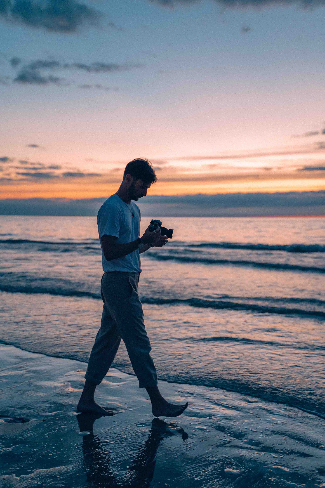

Filmmaker & Photographer
Hello there! 👋🏻 I'm Antoine Corniere. I'm a french 🇫🇷 independent filmmaker and photographer. I'm always trying and experiment new things to progress and tell better stories.
I enjoy bringing a range of visual influence into my work and combining different styles. Films and photography, are one of the greatest way to sharing stories that will inspire people and make them dream.
